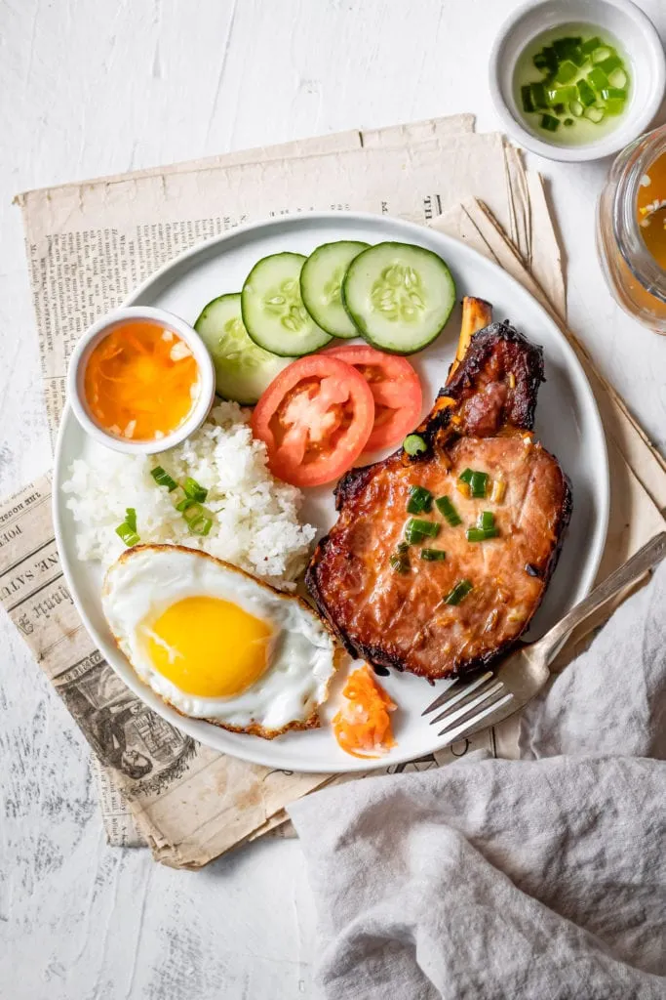

Home
Com Tam

Description
Cơm Tấm, or broken rice, is a classic Vietnamese dish often served with grilled pork,
a fried egg, pickled vegetables, and a splash of fish sauce. It's a flavorful and
satisfying meal that's especially popular for lunch or dinner.
- Broken rice
- Grilled pork
- Fried egg
- Pickled vegetables
- Cucumber slices
- Fish sauce (for dipping)
- Cook the broken rice.
- Grill the pork.
- Fry an egg.
- Put rice on a plate and add pork and egg.
- Add pickled veggies and cucumber on the side.
- Pour a bit of fish sauce on top.